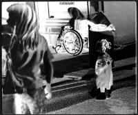

Sandy Rankin
Karleen's Little Brother Has a Bad Dream.
She Tells Him a Story.
Why should Mother have pretended to like it?
It was a cheap thing. It didn't shine at all
like I thought it did when I was ten,
easily impressed by miniature trinkets
and treasures: tiny porcelain ponies, bells
for the shoes of elves, glass hand-blown
into humming birds, palm-sized angelsó
this one made of metal, antique-gold,
the inside of her wings lined with silver, crinkled up.
Her slight halo, thread-thin, quivered in my hand.
Dustcatcher, Mother called it. I think she said it.
She didn't want it. I put it in my own drawer,
still wrapped in red and white paper,
the red fading to pink, the white turning yellow.
That same night, you came running from your room to mine,
just like you did tonight, crying and shaking
from a bad dream. I held you, telling you a story
about an angel, hoping to make us both feel better.
It was when you were two. Big boy, seven now.
Are you too big to believe in angels?
First grade changes us that way. It changed me.
Anyway, she wasn't pretty enough, I told you.
This angel who liked to cuss. To draw pictures
instead of playing on a harp or singing hosannas.
In fact, she sang so badly, her mother told her
she should just move her lips, pretend like
she was singing, so no one would know.
That's when the Lord sent her to earth
where she became very still and small,
landing on a shelf in the Ben Franklin store,
where I came along and bought her.
A dumb story, I guess. But when you fell asleep,
I saw you were smiling.
I liked when I woke in the middle of the night
that night, your knees pressed into the small of my back,
your face in the nape of my neck, your thin fingers
of one hand grasping a strand of my wet hair.
When I turned over on my back so I could think,
I saw one side of your face and shoulder shine
from a wave of light through my open window,
from the headlights of a passing car. The house so quiet.
I thought I heard a woman singing with the radio,
something by Hank Williams, and then a man laughing.
That angel, the one I bought, is still in my drawer.
I think of it as a cave where she dreams of unfamiliar shapes
that tremble or whirl or blaze, all of them in need of a voice,
rich and delicate with grace.
|

(Delores Gray) |
{kind=link}